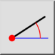

角度的線
工具列 / 圖示:

菜单:
繪製 > 直線 > 角度的線
捷徑:
L, A
命令:
lineangle | la
說明
使用此工具建立具有給定角度的直線。建立後通常會將直線修剪到所需的長度。
使用方式
在選項工具列中選擇所需的
線型
。
在選項工具列中輸入直線的角度和長度。
在選項工具列中，選擇要用於定位直線的直線上的參考點。「Start」表示直線的起點將位於您定位它的點。
用滑鼠或在指令行中輸入座標來放置直線。